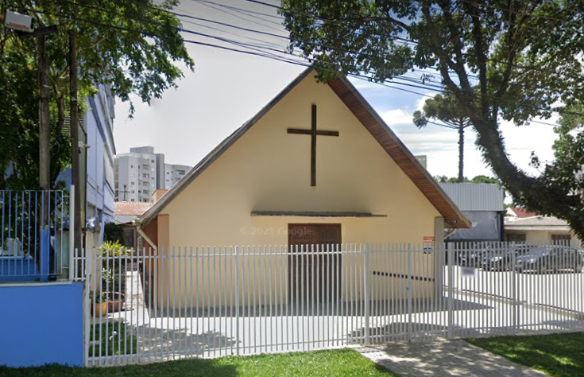
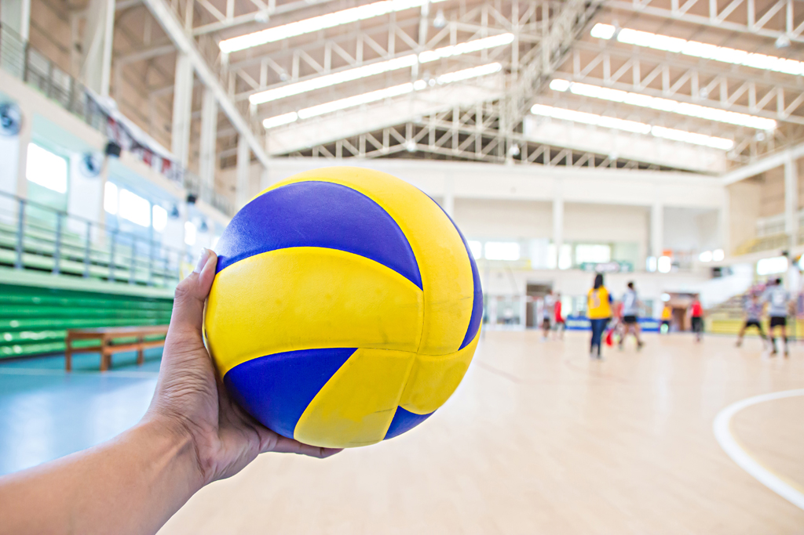
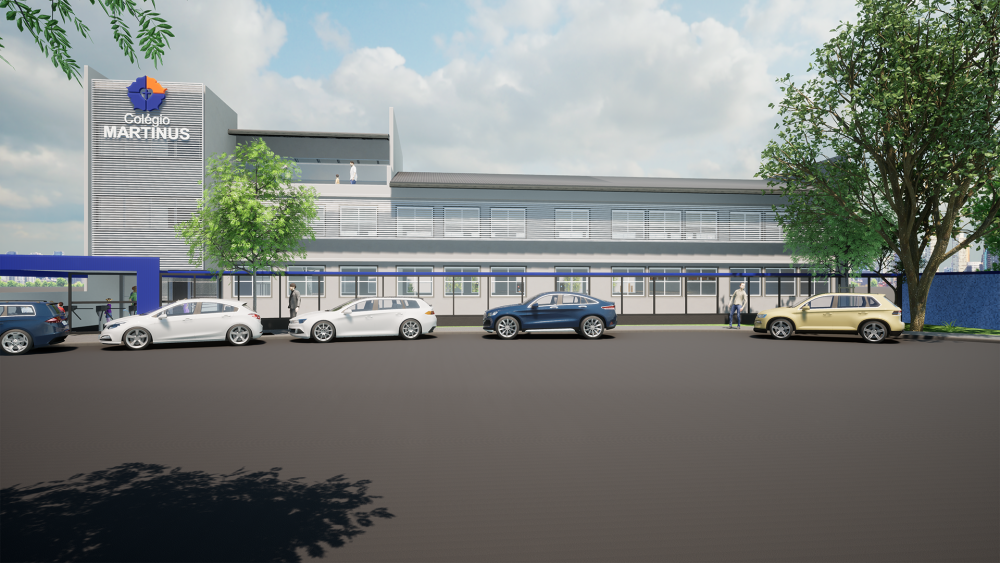

Capela
O Colégio Martinus é uma "Gemeinde Schule", ou seja, uma Escola de Comunidade desde a sua origem que, em Curitiba, começou no ano de 1948. Sua história está fortemente vinculada à cultura alemã e ao laço com a confessionalidade luterana. No ano de 1980 o Colégio Martinus passou a funcionar também no Bairro Portão com a criação do que foi chamado na época de “Colégio Martinus Junior”.
Rua Arthur Mohr, 144 - Portão, Curitiba - PR, Brasil
Volei

Aulas de volei - Os alunos podem jogar volei a partir do sétimo ano.
Aulas ótimas!
Novos prédios

Os novos prédios que estão sendo construídos no Martinus Portão, serão prédios de Ensino Médio. Antigamente, o Ensino Médio ficava apenas na Unidade do Portão, mas, para facilitar para as famílias que ja estudam ali, e para expandir a escola, resolveram construir a unidade de Ensino Médio do Portão